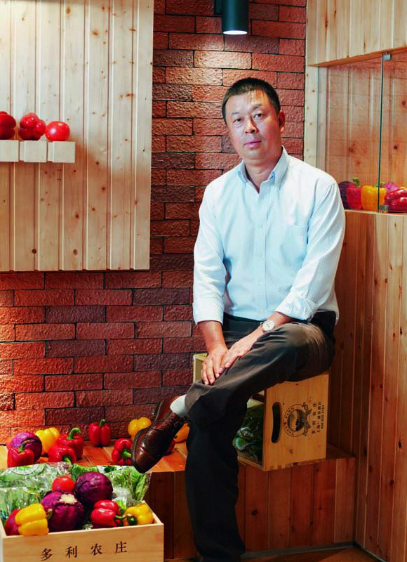

庄主寄语
CHAIRMAN
MESSAGE
"致力于做健康安全食生活的提供者 !"
 十多年前，“多利”是一个川菜连锁店的品牌，在沪上小有名气；十年前，我们深感中国 食品安全问题的严峻，毅然放 弃了餐馆，投身到有机蔬菜的种植事业中来；十年后的今天 多利已发展为上海著名的有机农庄，为十万多户家庭、酒 店、学校提供最安全新鲜的有机 蔬菜，并在北京、成都等地开始了有机蔬菜宅配服务。
十年创业之路筚路蓝缕、悲喜交织。和十年前不同，如今的多利经过十多年的发展，已经 成为上海著名的有机蔬菜生产 企业，并喜获2015年度“上海名牌”，收获了来自用户、行 业和政府等领域的广泛赞誉；但和十年前一样，我们一如既 往地尊重淳朴的农夫精神，感 恩他们用勤劳的双手在田间起早摸黑地劳作；我们一如既往地爱护生命、敬畏土地，我们 越来越坚定地认为，煦暖的阳光、清澈的溪流、干净的空气以及淳朴的心灵，才是这个蔚 蓝星球上宝贵的财富，其他 看起来很耀眼的东西都只是短暂的虚荣。
2016年，多利开启第二个十年的征程。多利从有机蔬菜的先导者正式转型为面向全国消费 者健康安全食生活的提供 者。在商品方面，我们将全面扩充生鲜品类，满足您和您的家人 一站买齐餐桌美食的心愿；在服务方面，我们的物流配 送将会大幅提速，只为送给您更新鲜 更健康的食材；最为重要的是，我们将一如既往当好质检员，从田间到餐桌，挑剔 地为您把 好每一道质量的关卡，不忘初心，方得始终；念念不忘，必有回响。我们坚守品质、坚持高 标准，我们认为为 更多的人提供健康、安全、美味的食品，让大家都能享受到健康安全食生 活，乃是累积福报的伟大事业，我愿将这样的 福报回向给所有对土地、家人和生命抱有热爱 的朋友，我愿大家的这个共同事业常青。
谢谢，感恩。
多利农庄创始人、董事长 张同贵